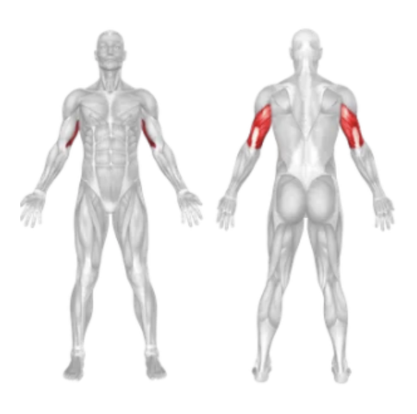

Setup
- Attach a straight bar to a high pulley on a cable machine.
- Stand upright, feet shoulder-width apart, facing the machine.
- Grab the bar with an underhand (supinated) grip — palms facing up — hands about shoulder-width apart.
- Keep your elbows close to your sides and your upper arms stationary throughout the movement.
- Lean slightly forward and engage your core for stability.
Execution
- Push Down: Exhale and extend your arms by pushing the bar down until your arms are fully straight.
- Squeeze: At the bottom of the movement, squeeze your triceps for a second.
- Return Slowly: Inhale and slowly let the bar rise back to the starting position while maintaining elbow position.
Tips for Effectiveness
- Elbows Locked In: Do not let your elbows flare out or move forward during the exercise.
- Control the Motion: Avoid using momentum; use a steady, controlled movement throughout.
- Grip Carefully: Keep a firm grip on the bar to avoid wrist strain.
- Keep Wrists Neutral: Avoid excessive bending of the wrists to reduce joint stress.
Benefits of Reverse Grip Bar Pushdown
- Emphasizes the Long Head: Targets the long head of the triceps more than a standard pushdown.
- Improves Arm Definition: Helps sculpt and strengthen the triceps for a more defined arm.
- Wrist-Friendly: Reverse grip may reduce strain for those with wrist issues.
- Isolation Exercise: Effectively isolates the triceps with minimal involvement from other muscles.
Muscles Worked in the Reverse Grip Bar Push Down
